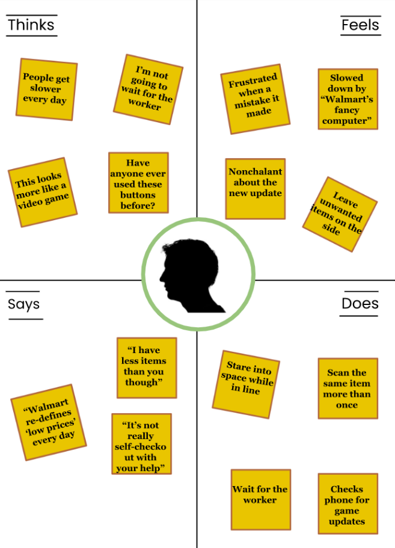
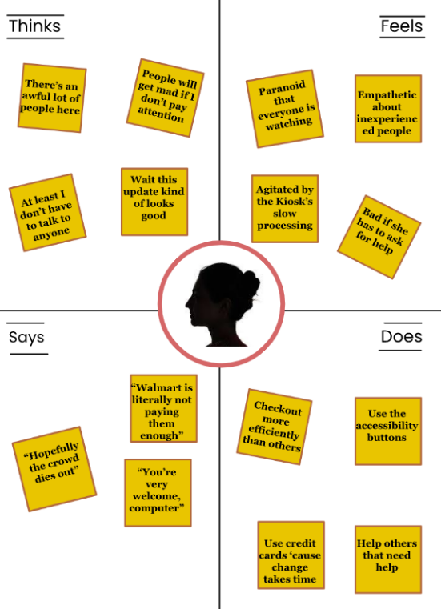
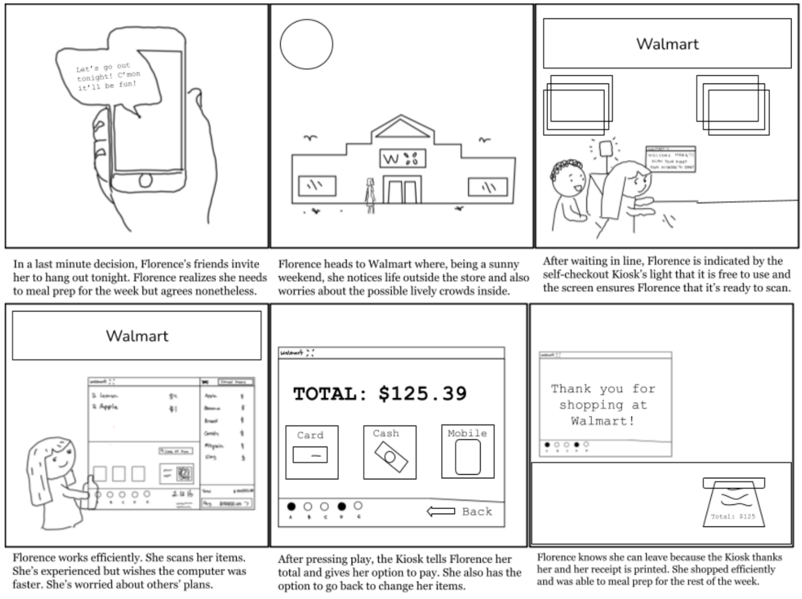

Designing effective and accessible UI/UX involves a process of observation, interviewing, personas, and storyboards. This project follows such process, focusing a Walmart's Kiosk Self-Checkout and its interface.
First, we need to prepare. We need to select an accessible interface, generate objective questions and create a rough sketch of the interface
A self-checkout kiosk is a safe interface to observe. It's public, meaning there's no weird stares when observing people, and many different types of people use it everyday. It also had multiple components to it that are important for a smooth checkout process.
This interface, which aims to assist users in checking themselves out for their groceries, has a main component and two sub grids (labeled). The main section displays items and their prices. The first sub section displays all scanned items and the total price and the last sub displays assistive buttons that include volume and language controls.
The observation process of this is pretty simple: we need to observe people (passive) using the interface and interview them (active) about their experience using the interface.
Constructing personas includes a four-quadrant overview of what the person would "Feel", "Say", "Think", and "Do". Personas are built from the interviews observations gathered in the previous section and aren't based on one particular subject. Personas are FICTIONAL characters and should never represent real people.
 Bob (left) the Bored man doesn't necessarily hate or love grocery shopping. He just has better things to do like watching the game. This persona is based off on the nonchalant older demographic that is featured in my observations. Bob is ok with the technology but he is easily frustrated.
Florence (right) is a young woman who is quickly trying to meal prep before going out with friends. She is very familiary with technology but is easily flustered by large crowds. This persona is based off the younger more tech-savvy demographic I observed: despite a time constraint, this demographic is more inclined to look at the details and is more empathetic toward others.
Storyboards continue the story of personas. It follows the persona's journey and their interaction with the interface. This storyboard follows the journey of Florence.
